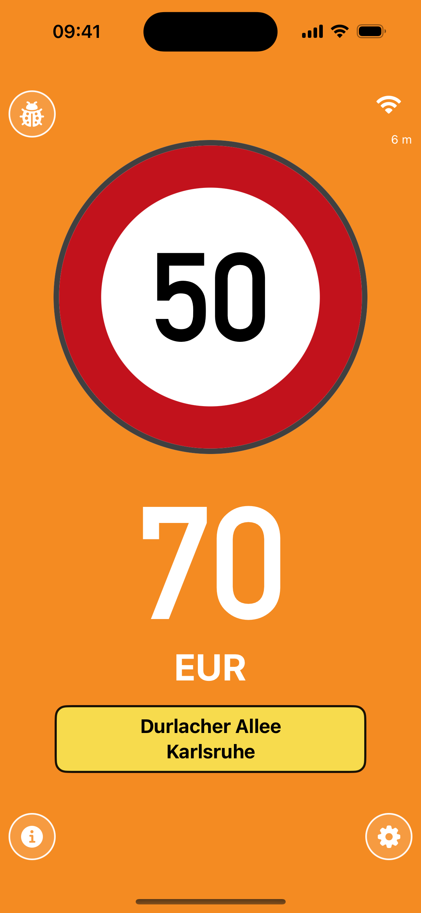
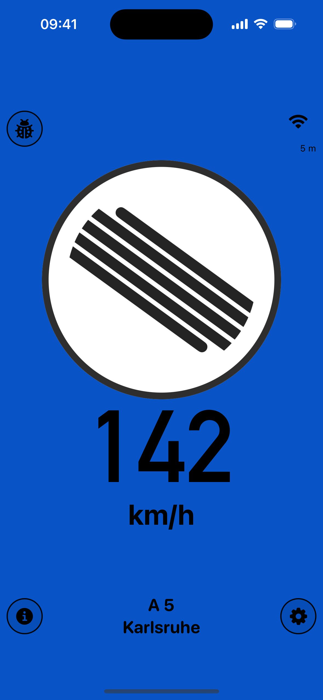
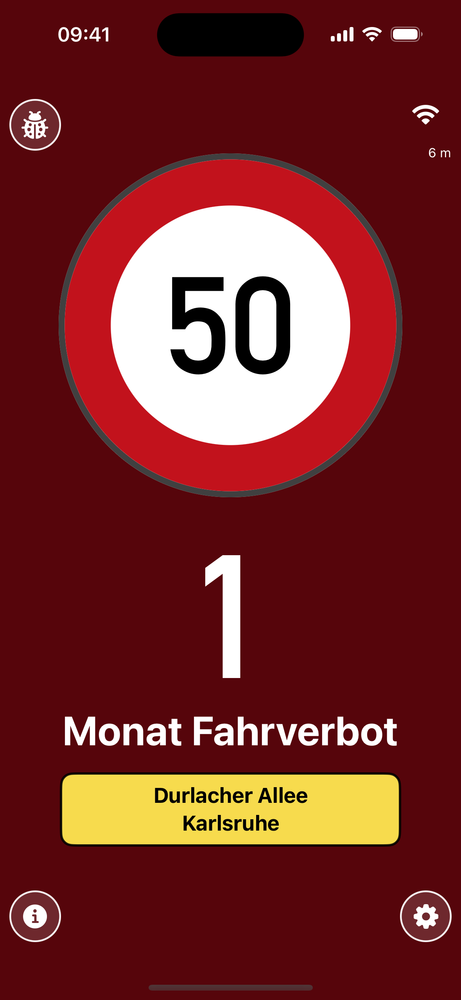

iPhone consumentenapp
Duitsland-data, lokale snelheidslimietzoeker, waarschuwingsniveaus, spraakinvoer op het apparaat en OSM-attributie zitten in het launchpad.
iPhone eerst · Android alpha · Offline kaarten
Live snelheidslimietassistent
De app houdt de herkende snelheidslimiet en je actuele snelheid direct zichtbaar. Boete-, punten- en rijverbodsinformatie blijft indicatief en draait op lokale kaartgegevens.



Huidige app-status
De pagina volgt de huidige iPhone- en Android-status in de repository: iPhone is het openbare launchpad, Android blijft alpha, en beide delen hetzelfde offline bundlecontract.
Duitsland-data, lokale snelheidslimietzoeker, waarschuwingsniveaus, spraakinvoer op het apparaat en OSM-attributie zitten in het launchpad.
Android gebruikt dezelfde bundledoelen en gelokaliseerde appteksten. Er is geen publieke store-CTA totdat veldtests en pariteit klaar zijn.
Land- en regiopakketten worden als reproduceerbare assets behandeld. De launch blijft gericht zonder live gebruik in heel Europa te overdrijven.
Live weergave
YouSpeed reduceert de rijweergave tot snelheid, limiet en gevolg. De kleuren volgen de app: neutraal, boete, punten, rijverbod en onbeperkte Autobahn.


Wat de app doet
De kernfuncties komen rechtstreeks uit de bestaande app-schermen en storemetadata.
De actuele limiet en snelheid staan centraal in de rijweergave.
Boetes, punten en rijverboden zijn oriëntatie, geen juridisch advies.
Kaartgegevens staan lokaal op het apparaat en werken onderweg zonder netwerk.
Herkende limieten kunnen lokaal via spraak worden vastgelegd en later gecontroleerd.
Data & werking
De app draait op lokale OSM-bundles, reproduceerbare doelen en aparte releasepaden voor iOS en Android.
kleine landen als compacte pakketten
regionale shards voor beheersbare downloads
internet alleen voor optionele data-updates
Vertrouwen
YouSpeed is een assistentie-app. Verkeersborden, verkeersregels en officiële besluiten blijven bepalend.
Snelheidsgegevens zijn gebaseerd op OSM-tags zoals maxspeed, maxspeed:type en source:maxspeed.
De data valt onder de Open Database License. Attributie gaat naar OpenStreetMap-bijdragers.
De positionering blijft duidelijk: geen advertenties en geen tracking.
De storelink vervangt deze CTA pas wanneer de publieke listing live is. Tot die tijd vraagt de actie bewust om een launch-update.